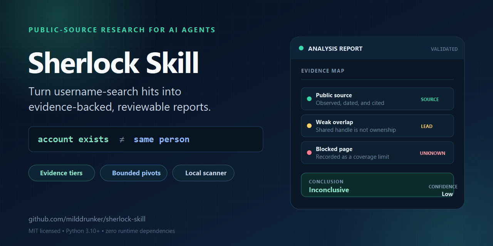

Evidence tiers
Separate observations, weak overlaps, contradictions, and direct linkage evidence with explicit confidence levels.
PUBLIC-SOURCE RESEARCH FOR AI AGENTS
Sherlock Skill turns broad username hits into a structured, reviewable investigation with explicit evidence tiers, bounded follow-up searches, and honest coverage limits.
MIT licensed · Python 3.10+ · zero runtime dependencies

THE CORE PRINCIPLE
Raw scanners can find matching handles. They cannot determine whether profiles belong to one person, whether an account is abandoned, or whether a public link is meaningful evidence.
BUILT FOR REVIEWABLE WORK
Separate observations, weak overlaps, contradictions, and direct linkage evidence with explicit confidence levels.
Follow distinctive public leads for at most two rounds and 12 checks by default, with every dead end recorded.
Generate a Markdown report plus machine-readable evidence, source dates, limitations, and unresolved candidates.
QUICK START
git clone https://github.com/milddrunker/sherlock-skill.git
cd sherlock-skill
python scripts/username_analysis.py collect \
--username example_user \
--workspace .
python scripts/username_analysis.py validate \
username_analysis/example_user/username_analysis.md
Ask any coding agent to read SKILL.md and complete the
review, or use the bundled scanner directly.
DESIGNED WITH BOUNDARIES
Use the workflow only with a lawful basis and appropriate scope. Sherlock Skill does not bypass authentication, collect private data, confirm legal identity, or make high-impact eligibility decisions.
Read the safety boundaries →